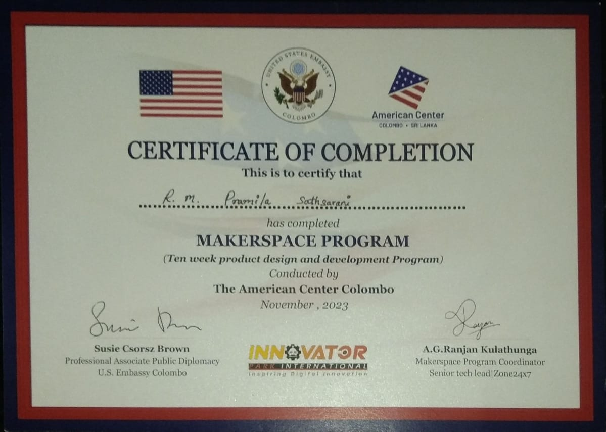
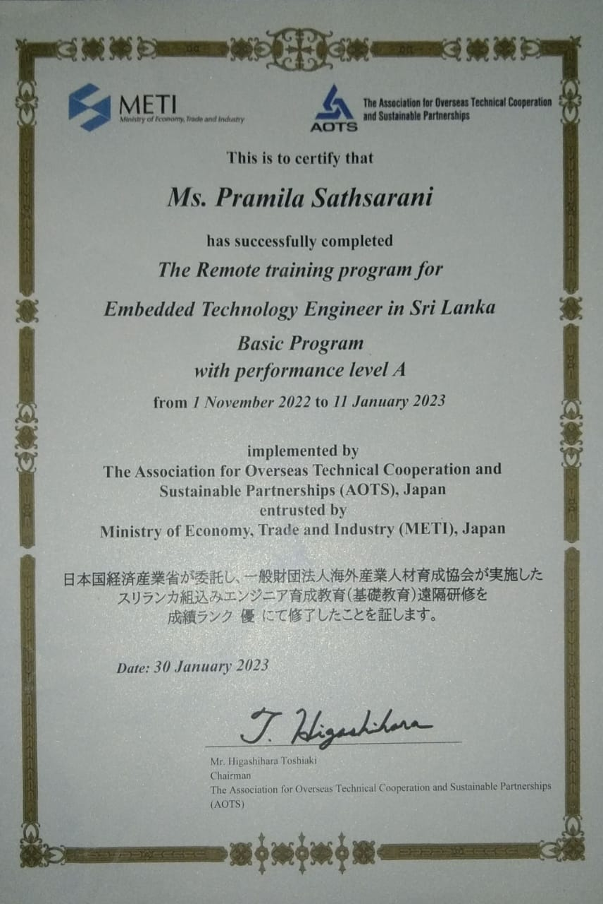

CERTIFICATIONS
2019
Certified in Embedded Systems Design

Focused on microcontroller programming, hardware-software co-design, and embedded system optimization.
2020
IoT Specialist Certification

Specialized in IoT architecture, sensor integration, and secure communication protocols.
2022
AI & Machine Learning Fundamentals

Covered supervised learning, neural networks, and real-time AI applications in engineering.
2024
Advanced Signal Processing Techniques

Focused on biomedical signal analysis, DSP algorithms, and real-time processing systems.
November 2023
IoT Product Development

Product Design and Development Program Conducted by The American Center Colombo focusing on IoT Product Development and Printed Circuit Board Designing. .
1 November 2022 to 11 Jnuary 2023
Embedded Technology

THE REMOTE TRAINING PROGRAM FOR EMBEDDED TECHNOLOGY ENGINEER IN SRI LANKA implemented by The Association for Overseas Technical Cooperation and Sustainable Partnerships (AOTS), Japan entrusted by Ministry of EConomy, Trade and Industry (METI), Japan.